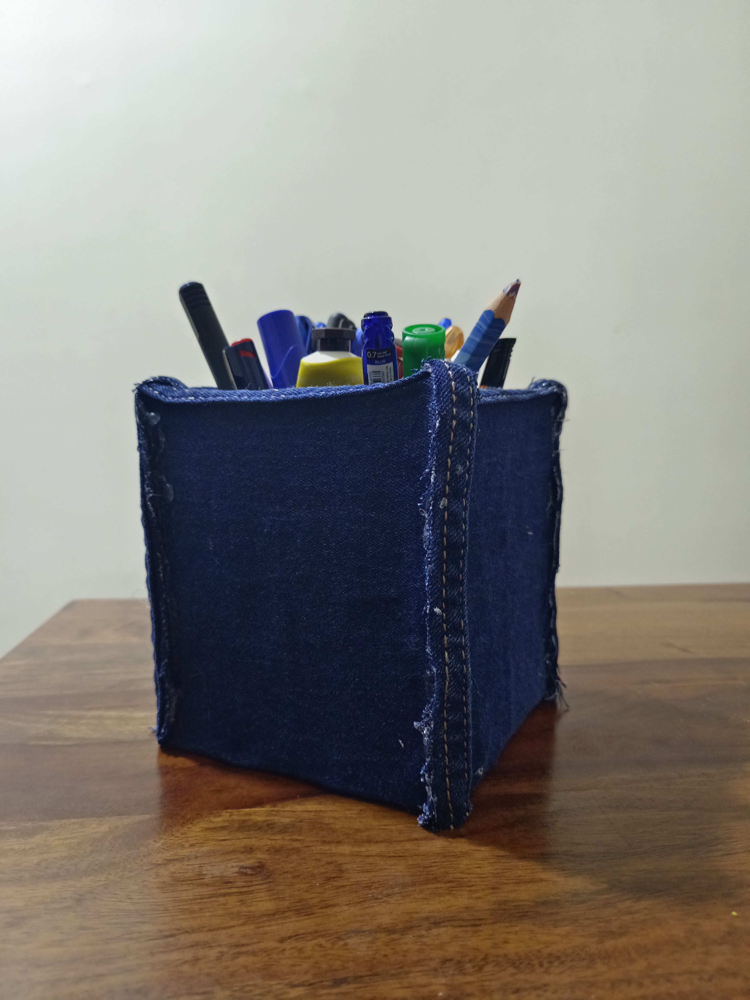
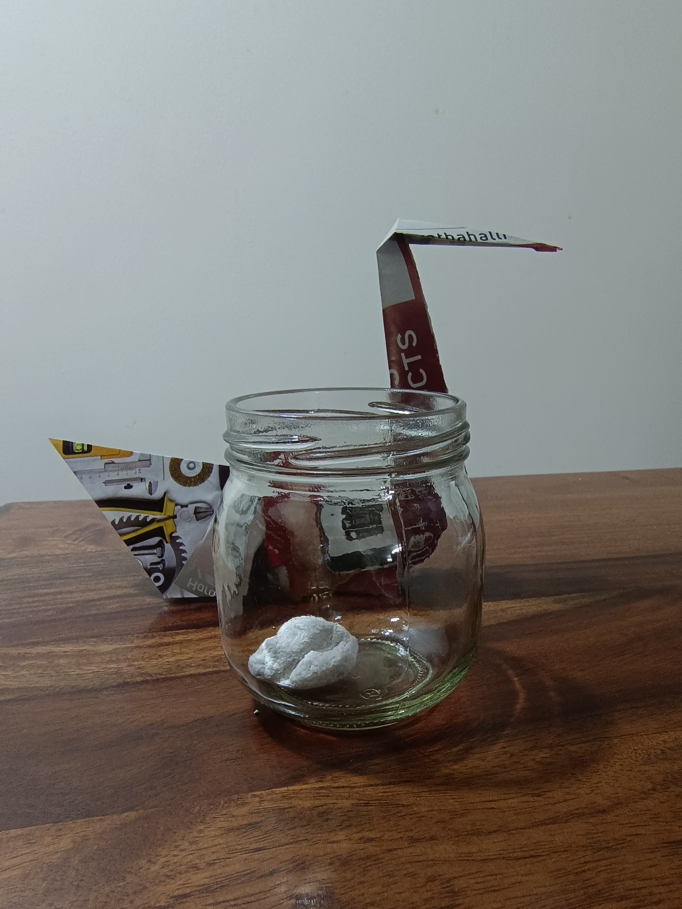

GreenCrafts
Our motto is to create quality products that are good for the the environment
Why Us?
I realised that though there are a wide range of products flooding the market, there were no good quality eco-friendly available at an affordable price,
so I decided to take matters into my own hands and create GreenCrafts. At GreenCrafts, we assure good quality upcycled products at an affordable price for
you or a friend; the office or your home. Whatever the case, we have products to suit your needs.
We have three products presently on sale, with more to come soon!
Meet our Products
Product one: The Denim Penstand
Denim is a tough material that can survive wear and tear better
than plastic. It is lighter than wood and
looks better than metal. This penstand uses good quality, upcycled denim to create a more asthetically pleasing, durable penstand. Price: ₹300 for 1.

Product two: Fake Rock
Rocks can be great for decoration but are often too cumbersome
or dangerous. Newspaper, when turned into a rock can have the same aesthetics and eliminate the disadvantages of an actual rock. This is perfect to gift
to a friend at work or buy for you own home. Price: ₹70 for a box of 10.

Product three: Newspaper swan
Origami can often look
unprofessional or have low quality. However, our upcycled origami newspaper swan has both high quality upcycled materials, including
a wooden base, and pleasing aesthetics. Price: ₹110 for set.
SALE! BUY A SWAN AND GET TWO OTHER SIZES FREE

How do I buy a product?
Open the link below to order your products
Click Me!
Light Mode